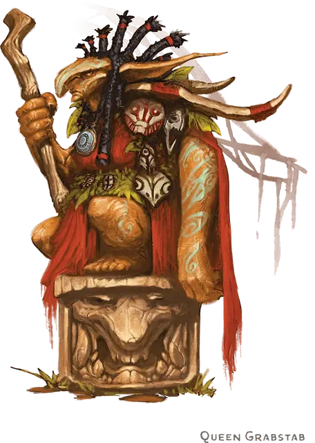

Грабстеб
Grabstab
Маленький Гуманоид (Гоблиноид), нейтрально-злой, именной НИП

Класс Доспеха 17 (кольчужная рубаха, щит)
Хиты 21 (6к6)
Скорость 30 футов
| мод | спас | ||
|---|---|---|---|
| СИЛ | 10 | +0 | +0 |
| ЛОВ | 14 | +2 | +2 |
| ТЕЛ | 10 | +0 | +0 |
| мод | спас | ||
|---|---|---|---|
| ИНТ | 10 | +0 | +0 |
| МДР | 8 | −1 | −1 |
| ХАР | 10 | +0 | +0 |
Навыки Скрытность +6
Чувства тёмное зрение 60 футов, пассивное Восприятие 9
Языки Общий, Гоблинский
Опасность 1 (200 опыта)
Бонус мастерства +2
Среда обитания Лес, Луг, Подземье, Холмы
Особенности
Ловкий побег. Грабстеб может в каждом своем ходу бонусным действием совершать действие Засада или Отход.
Действия
Мультиатака. Грабстеб совершает две атаки скимитаром. Вторая атака совершается с помехой.
Скимитар. Рукопашная атака оружием: +4 к попаданию, досягаемость 5 футов, одна цель. Попадание: Рубящий урон 5 (1к6 + 2).
Метательное копье. Рукопашная или дальнобойная атака оружием: +2 к попаданию, досягаемость 5 футов или дистанция 30/120 футов, одна цель. Попадание: Колющий урон 3 (1к6).
Реакции
Перенаправление атаки. Если существо, видимое Грабстеб, нацеливается на него атакой, Грабстеб выбирает другого гоблина в пределах 5 футов от себя. Эти два гоблина меняются местами, и целью становится выбранный гоблин.
Описание
Королева носит бронзово-адамантовый медальон с надписью: «Ворн». Это амулет, управляющий щитостраж [shield guardian] (см. «Ворн»,стр. 43). Ни один из гоблинов не имеет понятия, что амулет связан с объектом, который они почитают как младшее божество.